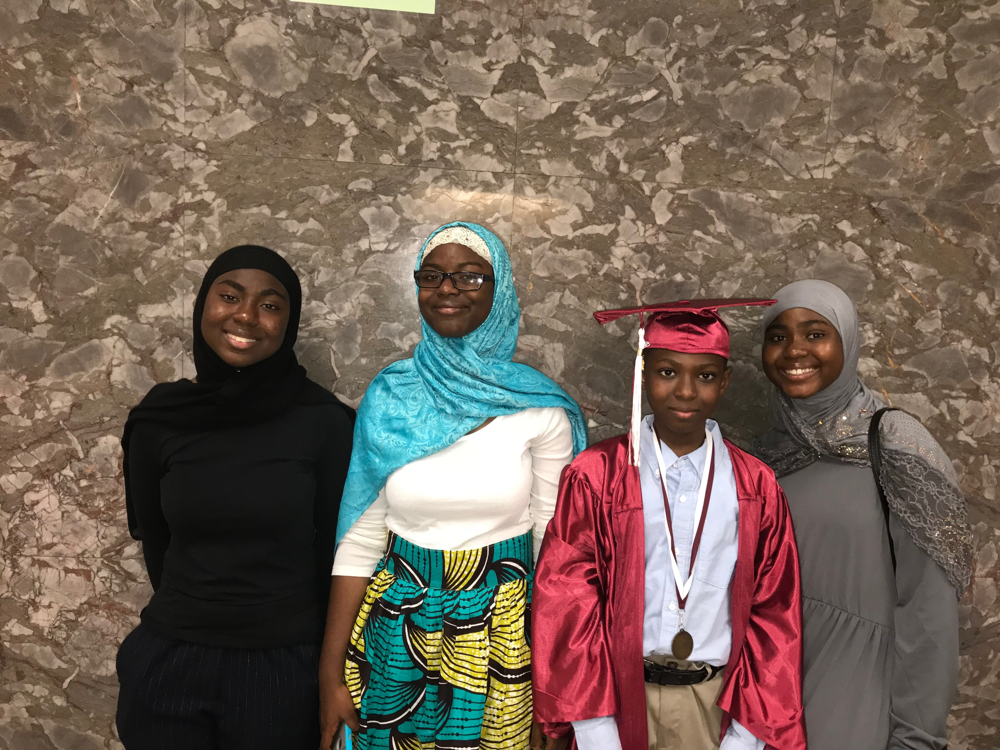
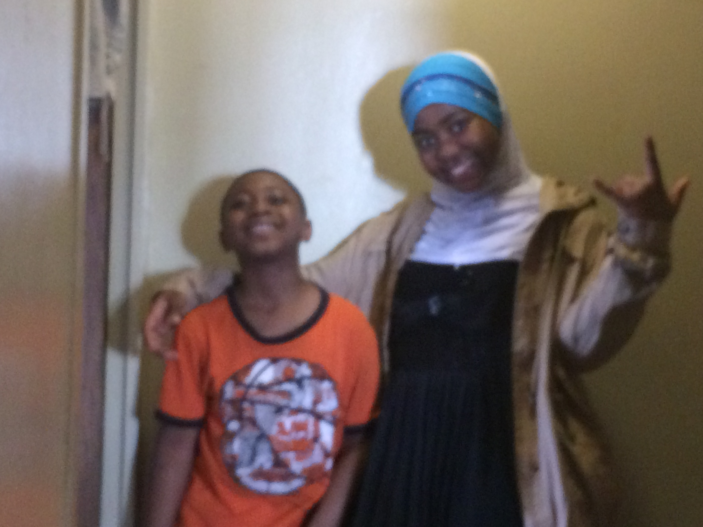
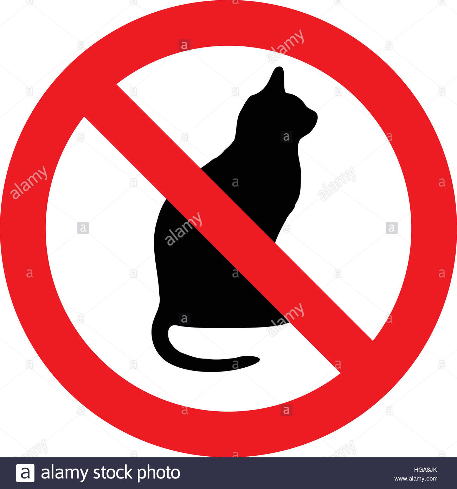

All About Me
Hurairah Maiga
Bio:
I am a regular degular girl from Bronx, NY. I was raised in Ghana for almost ten years and I love the culture there.I will be a rising senior and I am quite nervous about the college process. Although this is my first time trying coding, it is a bit fun and surprisingly interesting, I never expected to like it as much as I do now. I enjoy reading all types of genre and reading the Quran. I am the oldest of five and I find it inspiring that I was born into the role of a leader.I'm a bit clumsy and a bit awkward.To prevent myself from being uncomfortable in a new setting, I think of memes that I have seen and just laugh.
 

Favorite Websites: www.netflix.com